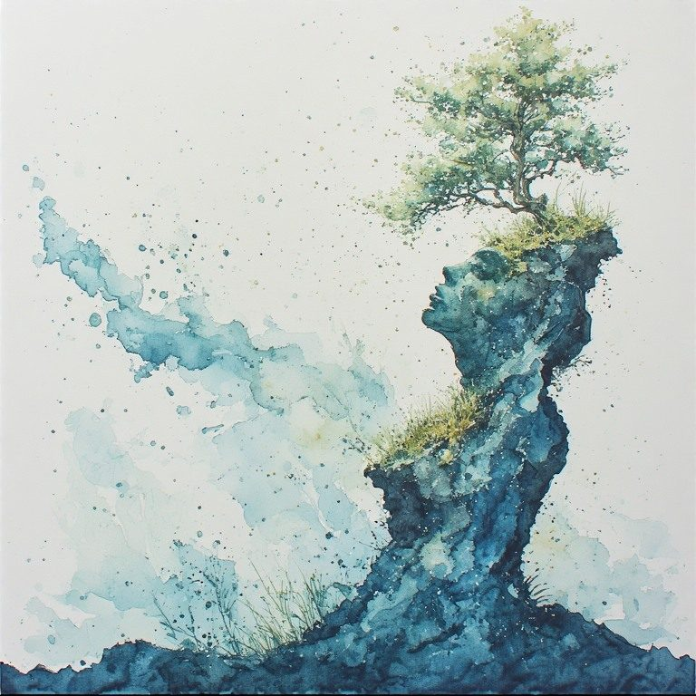

Part Four: The Not-Yet-Born
← Part Three: The Wheel · Radical Immanence Collection · Part Five: Intergenerational Witness →
The vertical axis runs in two directions. The ancestors are below. The not-yet-born are above. Most of us spend more time thinking about the past weight than the forward obligation. This part turns to look in the other direction.
The not-yet-born are not hypothetical. They are the structural consequence of the fact that time continues. People will stand on the ground you are forming right now. That is not a metaphor. It is the literal fact of what a life deposits in the world.
What You Are Depositing
Everything you do right now is being deposited. The language you model for the people around you. The emotional patterns you enact in your close relationships. The choices you make about what to carry consciously and what to pass forward unnamed. The cultural, material, and relational ground you are helping to form.
Most of this is invisible to you. You do not experience yourself as depositing. You experience yourself as living. But from the perspective of the vertical axis, living is depositing. Every layer of the present moment is becoming the past that future people will be built from.
This is not a reason for paralysis or perfectionism. You are finite. You cannot control what you deposit with any precision. But you can pay attention to what you are carrying, because carried honestly it deposits differently than carried unnamed. The grief that is witnessed passes forward differently than the grief that is suppressed. The harm that is acknowledged becomes something the people who receive it can work with. The harm that is denied becomes something they have to unknowingly carry.
What are you depositing right now, in your close relationships and your community, that you would want the people who receive it to be able to name?
Seven Generations
Many Indigenous traditions hold that decisions should be made with attention to their effects seven generations forward, roughly one hundred and seventy-five years. Most people treat this as just a longer version of normal forward-thinking. It is something fundamentally different.
Normal forward-thinking asks: what will the consequences of this decision be? The seven generations question asks: what am I depositing in the sediment. What kind of ground am I helping to form? These are not the same question. The first is a calculation about outcomes. The second is a method of attention. It asks you to locate yourself on the vertical axis, to feel the weight of what you received and the responsibility of what you are forming, and to make decisions from that location rather than only from inside the present moment.
You do not have to make every decision with seven generations in mind. That would be exhausting and probably distorting. But the capacity to shift into that frame occasionally, to ask what am I depositing rather than what will happen, changes the texture of how you inhabit your life. It makes the vertical axis felt rather than abstract.
| What kind of ground are you forming right now? Not what consequences will your choices have, but what layer are you adding to the sediment that people will stand on long after you are gone. |
|---|
What is one thing you are doing, or not doing, right now that you would want the not-yet-born to receive in a particular way?
The Obligation Without Religion
Here Is Enough does not require a god or a beyond to locate the sacred. It locates it here, in the ordinary present moment, attended to with full and honest attention. The Crossing Point extends that same commitment to the obligation toward future generations.
You do not need God, natural law, or abstract moral principle to be obligated to the not-yet-born. The obligation is structural. It comes from what you actually are: a crossing point on a transmission line, constituted by what was deposited before you and constituting what will be deposited after you. You cannot step outside this obligation any more than you can step outside the ground you are standing on.
The obligation is not a burden added to a free self. It is a dimension of what the self actually is. And it does not require perfection. It requires honesty. Carrying what you carry with knowledge of what it is. Naming the harm alongside the gift. Passing forward what you received with as much consciousness as you can bring to it.
That is enough. It has always been enough.
What does carrying honestly look like for you, specifically, right now? What are you most responsible for naming before you pass it forward?
Here Is Enough.
